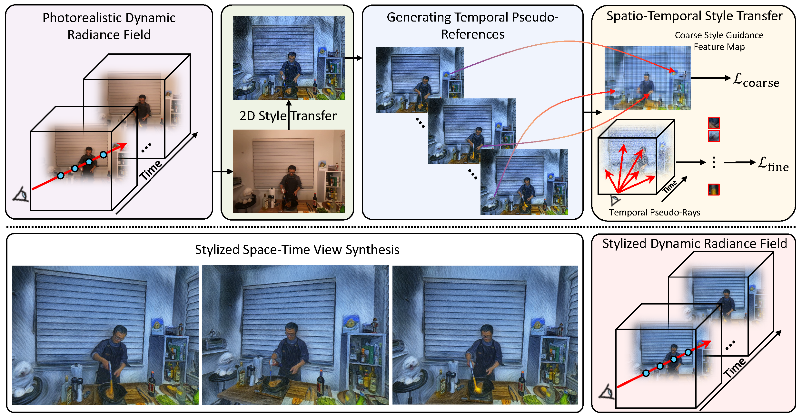

1S-Lab, Nanyang Technological University 2Huazhong University of Science and Technology 3SenseTime Research
Current 3D stylization methods often assume static scenes, which violates the dynamic nature of our real world. To address this limitation, we present S-DyRF, a reference-based spatio-temporal stylization method for dynamic neural radiance fields. However, stylizing dynamic 3D scenes is inherently challenging due to the limited availability of stylized reference images along the temporal axis. Our key insight lies in introducing additional temporal cues besides the provided reference. To this end, we generate temporal pseudo-references from the given stylized reference. These pseudo-references facilitate the propagation of style information from the reference to the entire dynamic 3D scene. For coarse style transfer, we enforce novel views and times to mimic the style details present in pseudo-references at the feature level. To preserve high-frequency details, we create a collection of stylized temporal pseudo-rays from temporal pseudo-references. These pseudo-rays serve as detailed and explicit stylization guidance for achieving fine style transfer. Experiments on both synthetic and real-world datasets demonstrate that our method yields plausible stylized results of space-time view synthesis on dynamic 3D scenes.

Given a pre-trained photorealistic dynamic radiance field, we first render a reference view at time k from a specific reference camera. Following that, the reference view undergoes a 2D style transfer using an appropriate method, e.g., manual editing, NNST, or ControlNet, to produce a stylized reference image. To propagate the style information from the stylized reference to other timestamps, we generate temporal pseudo-references and apply spatio-temporal style transfer to optimize our dynamic radiance field. Once this stylization is done, we can yield plausible stylized results of space-time view synthesis on dynamic 3D scenes.
@article{li2024sdyrf,
title={S-DyRF: Reference-Based Stylized Radiance Fields for Dynamic Scenes},
author={Li, Xingyi and Cao, Zhiguo and Wu, Yizheng and Wang, Kewei and Xian, Ke and Wang, Zhe and Lin, Guosheng},
journal={arXiv preprint arXiv:2403.06205},
year={2024}
}